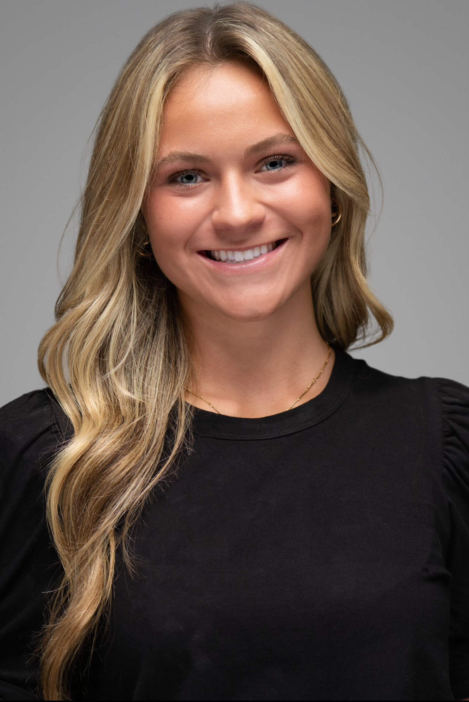

Alyssa Johnson
About Me
Welcome to my personal portfolio. I am a senior marketing student at Iowa State University pursuing a sales certificate. I love building relationships and working with others to achieve a common goal. My professional interests center on marketing, sales, communication, and creating meaningful connections.
Education
I am pursuing my Bachelor of Science in Marketing at Iowa State University and working toward a sales certificate. I expect to graduate in May 2027 and currently have a 3.5 GPA. My education has strengthened my understanding of marketing strategy, communication, customer relationships, and professional business development.
Experience
My experience includes working as a Marketing Intern with Tricam Industries, where I adapted quickly to new responsibilities and learned company procedures and operations. I also work as a Hostess and Boat Hostess with Al & Alma’s, delivering high-quality guest experiences, communicating professionally, coordinating with team members, and helping resolve customer needs.
Leadership & Teamwork
As a Recreational Gymnastics Coach at Classic Gymnastics, I led practices for children ages 3–15, communicated with athletes and parents, managed groups independently, and adapted coaching strategies to individual needs. This experience strengthened my leadership, communication, initiative, and ability to create a safe and motivating environment.
Campus Involvement
I am involved with Delta Delta Delta, also known as Tri Delta, and the Marketing Club at Iowa State University. These organizations have helped me build community, expand my professional network, and continue developing as a collaborative and relationship-focused student.
Career Goals
I hope to build a career in marketing and sales where I can use communication, relationship-building, and teamwork to help organizations achieve their goals. I am especially interested in opportunities that allow me to connect with people, contribute to a team, and create measurable value.